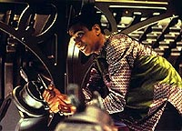
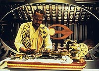
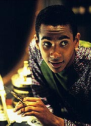
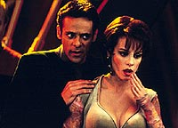
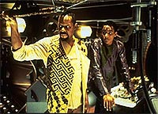

MANCHETE
DO EPISDIO
Visual
"Jlio Verne" e trabalho com os
personagens gera episdio vencedor
Episdio
anterior | Prximo
episdio
Sinopse:
Data Estelar:
desconhecida.
Bashir est no bar do Quark, paquerando uma nova garota Dabo, a Bajoriana Leeta. Dax o interrompe para informar da chegada (em trs semanas) da nave estelar Lexington, cuja oficial mdica a doutora Elizabeth Lense, a primeira colocada na classe de Bashir (que foi o segundo). O mdico de DS9 se sente estranho, por ela ter podido escolher qualquer posio na poca (a Lexington era o posto mais cobiado ento), inclusive a dele. Isto o faz sentir eternamente "o segundo melhor".
Enquanto isso, o comandante Sisko volta de Bajor com os diagramas de projeto de uma antiga nave solar Bajoriana, que utiliza a "presso luminosa" sobre largas velas como meio de propulso. A lenda diz que os Bajorianos conseguiram chegar a Cardssia 800 anos atrs com uma espaonave
deste exato tipo. Sisko planeja construir a nave ( risca) e provar a sua funcionalidade no espao. Sisko, nas trs semanas seguintes, constri a nave (sendo sua nica "concesso de projeto" a instalao de um sistema de gravidade artificial sob o piso) e convida Jake para acompanh-lo. Seu filho inicialmente recusa, mas acaba concordando.
Pouco antes de partir, Sisko recebe uma mensagem de Dukat, alertando-o sobre os "perigos" de tal viagem. O comandante no d muita bola, achando que Dukat est mais preocupado com o fato de os Cardassianos temerem que a sua pequena empreitada possa mostrar que a lendria "antiga travessia" de fato aconteceu. Pai e filho partem e Jake se v contaminado pelo entusiasmo "nutico" do pai.

Bashir tenta falar com Lense, que acaba de chegar ao bar do Quark, mas ela passa por ele como se no o conhecesse. Deprimido, Bashir toma um porre colossal com O'Brien em seus aposentos. Eles cantam "Jerusalem" completamente bbados. Bashir decide confrontar Lense, mas O'Brien acha melhor deixar para depois, pois o mdico mal se agenta em p. Bashir concorda e despenca no sof.
Sozinhos na viagem surge o ambiente ideal para Jake revelar que recebeu uma bolsa de estudos para escritores do importante Instituto Pennington na Nova Zelndia, Terra. Ben est orgulhoso, mas fica pensativo com a perspectiva de Jake deixar a estao. Subitamente um dos mastros da nave cede e os dois tm que se esforar muito para retomar o controle. Ben ejeta uma das "velas" e o problema fica resolvido por enquanto.
Ben pensa em desistir, mas Jake diz que os antigos Bajorianos devem ter passado por acidentes similares e isso no foi problema para eles. Ben decide continuar e Jake revela que vai adiar a entrada no programa de Pennington ao menos por um ano. Para ganhar mais experincias sobre o que escrever. O filho tambm revela que no quer deixar o pai sozinho se (e quando) ele realmente partir e quer arrumar uma companhia para ele, uma namorada.

Assim que Jake diz que conheceu uma mulher que ele acha perfeita para o seu pai, a nave solar sacode violentamente e surpreendentemente entra em dobra. Aps algum tempo o fenmeno cessa e Sisko teoriza que a nave fora pega em uma corrente de tquions (partculas que viajam mais rpido que a luz) e acelerada por tal ocorrncia. Os instrumentos de navegao foram danificados no acidente e o seu comunicador parece incapaz de contatar DS9, ainda que no esteja danificado. Eles no sabem aonde vieram parar.
Na estao, Bashir finalmente se encontra com Lense. A doutora diz que no o cumprimentou, porque sempre achou que ele fosse Andoriano (fruto de um mal-entendido de anos atrs). Para surpresa de Bashir, ela diz que o posto a bordo da Lexington se mostrou mais uma expedio cartogrfica e ela tm dificuldade de mesmo encontrar um fungo vivo ns misses da nave. E mais, ela se mostra muito interessada nos trabalhos de longo prazo de Bashir em Bajor e os dois vo para a enfermaria ver mais sobre tais estudos.
Jake conta mais sobre a capit de cargueiro que conheceu e Ben acaba concordando em encontr-la. Eis que subitamente surgem trs naves de guerra Cardassianas na rea. Dukat contata Sisko pelo rdio e afirma que foi enviado ali para felicitar Sisko pela sua chegada ao sistema Cardassiano. Ben e Jake se abraam com grande alegria. Dukat tambm l uma declarao em que Cardssia reconhece uma "recente descoberta" arqueolgica que mostra que de fato a lenda da "antiga travessia" de Bajor a Cardssia um fato real. O Cardassiano ordena uma salva de "fogos de artifcio" de suas naves medida que a pequena nave solar adentra o seu territrio.
Comentrios:
Praticamente inexistente em trama, o episdio um "vencedor" pelo talento do elenco e pelo fato de seus personagens realmente se importarem uns com os outros. Todo o conceito da "nave solar" (como apresentado aqui) traz vrias dvidas e impossibilidades, mas de toda a forma o cruzamento entre uma slida base cientfica e um ambiente "estilo Jlio Verne" trazem um frescor ao episdio que digno de nota. E a sua atitude de uma maneira geral realmente contagiante, mesmo que algo excessiva ao seu final. Mais detalhes, sem precisar construir uma nave solar Bajoriana no processo, nas linhas abaixo.
Talvez a maior "suspenso de descrena" (TM) necessria apreciao do episdio seja o fato de Sisko conseguir construir a nave nas horas vagas em apenas trs semanas. O pior que o roteiro chega a mencionar que Sisko usou somente as ferramentas que os antigos Bajorianos usaram, eliminando a hiptese da utilizao de "replicao industrial" na tarefa do comandante.

O conceito bsico de um "veleiro solar" bastante slido e Bajor tinha que ter na poca (800 anos atrs) algum tipo de dispositivo de lanamento do solo ou de uma instalao orbital para a construo/lanamento de tais naves. O que contrasta um pouco com a "veia potica" tomada na construo da nave em si. As idias de uma avanada fonte de fora (no especificada a origem), suporte de vida (sem maiores detalhes), banheiro de "gravidade zero" e raes de emergncia parecem OK. curioso que apesar de os controles da nave lembrarem os de um veleiro martimo, os
dispositivos claramente operam mecanismos muito mais sofisticados que cabos e polias. As redes para dormir e o equipamento de navegao de Sisko (instrumentos e mapas -- que simplesmente no podem esconder nenhum dispositivo high-tech) parecem abusar da "licena potica", entretanto.
E fica a absurda idia de que o sistema Cardassiano "suficientemente perto" para a nave solar chegar l em minutos em velocidade de dobra e "suficientemente longe" para que a mensagem de Sisko no chegue a DS9 antes das naves de Dukat se aproximarem. Se Sisko tivesse tomado todos os cuidados devidos, no haveria espao para os personagens. O episdio seria de fato sobre a "nave solar" e fracassaria. Ainda assim fica mencionado que o comandante correu riscos demais.
A explicao para a acelerao da nave a velocidade de dobra parece violar tudo que sabe sobre viagens acima da velocidade da luz em
Jornada. E a esta altura do campeonato fica at engraado imaginar se a nave solar tinha ou no tinha os infames "amortecedores de inrcia" para evitar que seus ocupantes fossem reduzidos a p sob extremas aceleraes.
Cardssia ao final apenas honrou ( sua maneira, claro) o recente tratado com Bajor (ver
"Life Support"). Alis, aps o fiasco da Ordem Obsidiana na semana passada, Cardssia est mesmo precisando de alguns aliados. Ben e Jake em uma nave solar Bajoriana eram um pacote irrecusvel em termos polticos. Coube a Dukat (outra bvia escolha do Conselho Detapa) lidar com Sisko antes e depois. O papel de Dukat aqui no um problema por si s. S se lamenta que tanta coisa tenha acontecido com Cardssia e no saibamos o que pensa o velho gul de nada disto, at o momento. S a utilizao de literais "fogos de artifcio" pareceu meio excessiva.

Novamente temos a preocupao de Sisko com a Histria
("Past Tense") e o seu recente e crescente desejo em abraar a cultura Bajoriana
("Destiny"). Curiosamente o episdio mostra como nenhum outro este ano a faceta de "construtor", que Michael Piller atribuiu ao personagem nesta temporada. O episdio sabiamente no se excede na "falsa encrenca" a bordo da nave solar e no perde o foco da relao entre pai e filho. A primria caracterizao de Jake por toda a srie vista aqui em primeira mo e o futuro afetivo de Sisko (com a capito Yates) tambm foi introduzido nesta semana.
Temos tambm a histria de Bashir. O fato de tanto Lense quanto Bashir nunca terem se dado ao trabalho de ver a foto um do outro tpica da cega competio na Universidade. Humanizar (dar uma face) ao oponente se tornar menos competitivo. O que parece drstico, mas o que realmente ocorre. Para Lense tais tempos (e tais atitudes) parecem muito distantes e para Bashir no. Somente o elogio da sua "mortal inimiga" que fez ele perceber o quanto ele j superou aquele seu "eu" de quase quatro anos atrs.
A cena em Bashir e O'Brien se embriagam um clssico instantneo. No somente de humor, mas (como nas cenas entre Ben e Jake) da mais clara verdade entre os personagens. difcil no colocar um sorriso no rosto quando O'Brien admite "no odiar" mais Bashir. As cenas envolvendo a aposta entre Quark e Morn tambm foram brilhantes.
Cliff Bole usou de uma mo suave e deve ter se divertido muito filmando os cenrios da nave solar. As atuaes foram extremamente naturais, sem truques ou manipulaes. Tivemos algumas das mais belas tomadas da estao de toda a srie e o visual (interno e externo) da nave solar foi um absoluto vencedor. Tal visual sem dvida um dos mais marcantes e caractersticos da srie como um todo.

difcil errar com Brooks e Lofton, Meaney e El Fadil juntos. A qumica est claramente l. A relao entre pai e filho e entre "bons camaradas", respectivamente, flui de forma natural -- mais do que qualquer dos citados gneros em
Jornada. Meaney foi particularmente feliz em um papel de bbado. Sem problemas quanto aos demais atores regulares.
Alaimo coloca suficiente subtexto em sua parte para indicar claramente que o governo enviou gul Dukat em uma "boca podre", ficando com o destaque entre os convidados. A estria de Masterson se mostrou mais como um meio para satisfazer uma "cota de decotes da semana" (TM) do que para focalizar algum ponto especfico da personalidade de Bashir. Hochwald se saiu bastante bem no papel.
curioso que o leve roteiro de Echevarria consiga fazer ao menos duas "propagandas" da srie. Na primeira e menos perceptvel Jake diz que DS9 um belo lugar para adquirir novas experincias. Na segunda e mais bvia Lense compara a vida de um oficial de uma nave estelar com a de um oficial a bordo de uma estao espacial de uma maneira similar a que os fs de Sisko e cia. muitas vezes comparam uma srie baseada em uma nave com uma baseada em uma estao. Aliado a isso, temos o visual nico (e especfico da srie) da nave solar em um episdio completamente sobre os seus personagens (outra caracterstica marcante da srie).
A barba de Sisko era postia aqui. Podemos ver em uma cena (aquela entre Bashir e Odo na enfermaria) o aparelho que Bashir utilizou para operar Bareil em
"Life Support".
curioso que Dukat mencione os Maquis como uma "possvel ameaa" misso de Sisko, quando o Dominion cresceu tanto em importncia como uma ameaa a ser temida na semana passada.
"Explorers" um bom episdio de DS9. Um pequeno episdio sobre personagens, uma caracterstica marcante da srie.
Citaes
O'Brien - "With all due respect, major, you're beginning to sound like a Romulan."
("Com todo o respeito, major, voc est comeando a soar como uma Romulana.")
Sisko - "For a moment there, I thought you had been put in charge of the Cardassian Ministry for the Refutation of Bajoran Fairy Tales."
("Por um momento, eu pensei que voc tivesse sido encarregado do Ministrio Cardassiano para a Refutao de Contos de Fada Bajorianos.")
Sisko - "In a few places, you're writing about things you haven't actually experienced... at least I hope you haven't experienced. Unless you've joined the Maquis without telling me."
("Em uns poucos pontos, voc est escrevendo sobre coisas que nunca experimentou.. pelo menos eu espero que nunca tenha experimentado. A no ser que voc tenha se juntado aos Maquis sem me contar.")
Bashir - "It's not a synthale kind of night."
("No uma noite do tipo bebida sinttica.")
O'Brien - "People either love you or hate you. I mean, I hated you, when we first met... and now..."
("As pessoas ou amam ou odeiam voc. Quero dizer, eu odiava voc, quando nos conhecemos... e agora...")
Bashir - "And now?"
("E agora?")
O'Brien - "And... now I don't."
("E... agora eu no odeio.")
O'Brien - "Better wait until tomorrow."
("Melhor esperar at amanh.")
Bashir - "Why? Why not right now?"
("Por qu? Por que no agora?")
O'Brien - "Because you can barely stand UP right now."
("Porque voc mal consegue ficar de P agora."
Bashir - "Good point."
("Bom argumento.")
Trivia:
 Hilary Bader tirou a inspirao da histria nas aventuras do noruegus Thor Heyerdahl, que navegou com uma jangada do Peru ao Taiti, substanciando a teoria de que antigos botes poderiam ter de fato cruzado o oceano Pacfico. Ren Echevarria (que escreveu o roteiro) ficou entusiasmado com a possibilidade de fazer uma histria com uma "nave a vela". A teoria por trs de "naves solares" slida, utilizando a quantidade de movimento linear dos ftons (provenientes de uma estrela prxima) para exercer uma verdadeira "presso luminosa" sobre gigantescas velas (de vrios quilmetros quadrados de rea). Tal mecanismo muito eficiente, mas com baixas velocidades. A viagem entre planetas de fato possvel. Uma nave solar real deveria ter velas muito maiores do que as apresentadas no episdio, mas foi feita assim pra simplificar o trabalho da equipe de efeitos visuais. O visual "de algo escrito por Jlio Verne" para o interior da nave foi idia de Echevarria tambm.
Hilary Bader tirou a inspirao da histria nas aventuras do noruegus Thor Heyerdahl, que navegou com uma jangada do Peru ao Taiti, substanciando a teoria de que antigos botes poderiam ter de fato cruzado o oceano Pacfico. Ren Echevarria (que escreveu o roteiro) ficou entusiasmado com a possibilidade de fazer uma histria com uma "nave a vela". A teoria por trs de "naves solares" slida, utilizando a quantidade de movimento linear dos ftons (provenientes de uma estrela prxima) para exercer uma verdadeira "presso luminosa" sobre gigantescas velas (de vrios quilmetros quadrados de rea). Tal mecanismo muito eficiente, mas com baixas velocidades. A viagem entre planetas de fato possvel. Uma nave solar real deveria ter velas muito maiores do que as apresentadas no episdio, mas foi feita assim pra simplificar o trabalho da equipe de efeitos visuais. O visual "de algo escrito por Jlio Verne" para o interior da nave foi idia de Echevarria tambm.
"Naves solares" so um assunto de real interesse do JPL (laboratrio de propulso a jato da NASA). O episdio recebeu o prmio "Best Vision of The Future" da "Space Frontier Foundation". Quem entregou o prmio foi um cientista do JPL. "Que de fato trabalha em 'naves solares'", disse na poca um orgulhoso Echevarria.
O trabalho de West foi muito difcil devido ao ambiente muito apertado do interior das "nave solar". Mas o cinegrafista ficou muito feliz com o resultado, usando um tipo diferente de iluminao sobre materiais pouco vistos na srie, em tons de cobre e cinza. Glenn Neufeld teve muito trabalho em tomar diferentes ngulos da estao, mas o trabalho final ficou maravilhoso, segundo o "guru" de efeitos visuais Dan Curry. A filmagem em si foi extremamente difcil, com a necessidade de ajustes de extrema preciso no sistema de comando numrico utilizado para usualmente filmar o modelo da estao.
Jim Martin levou os seus desenhos do exterior da nave para David Knoll (da "Industrial, Light & Magic") que produziu o primeiro modelo diretamente em computao grfica (para uma nave) da histria de Jornada. O compositor Dennis McCarthy tambm ficou muito feliz por no ter (a bordo da "nave solar") o "zumbido dos motores" (da camada de efeitos sonoras) para "brigar" com as suas composies durante a mixagem final.
O episdio ficou conhecido pelos produtores como o "episdio da borboleta". A histria de Bader envolvia O'Brien. Foram os produtores que a tornaram em uma histria sobre Sisko e Jake. pela primeira vez citada o segundo amor da vida de Sisko, a capit de cargueiro Kasidy Yates (que ser introduzida em cena no prximo episdio,
"Family Business").
O aspecto de escritor de Jake foi o mais srio trao do personagem em toda a srie. O clssico
"The Visitor" se baseia nessa noo. Este um tpico mencionado a primeira vez em
"The Abandoned". A personagem Leane foi vista em
"Life Support".
Chase Masterson tentou o papel de Mardah em "The
Abandoned", mas o diretor daquele episdio, Avery Brooks, a achou absurdamente velha para Jake. Chase assumiu ento o papel de Leeta, a "garota Dabo com o corao de Latinum", que namoraria Bashir e depois se casaria com Rom e se tornaria a primeira-dama da Aliana Ferengi ao final da srie. Leeta volta a parecer em
"Facets", ainda nesta temporada.
Ira Behr diz que a cena em que Bashir e O'Brien ficam bbados, cantam "Jerusalem" e falam sobre a vida foi muito especial para ele. Foi algo simplesmente muito humano para o produtor-executivo da srie. A escolha da cano foi idia de El Fadil e Meaney.
"Jerusalem" uma das conhecidas canes populares da Inglaterra e as verses mais conhecidas dela so aquelas feitas pelo conjunto "Emerson, Lake & Palmer", em estdio no lbum "Brain Salad Surgery" e ao vivo no lbum "Welcome Back My Friends To The Show That Never ends".
"Jerusalem" (Letra de William Blake e msica de C. Hubert H. Parry):
And did those feet in ancient time
Walk upon England's mountains green
And was the Holy Lamb of God
On England's pleasant pastures seen
And did the Countenance Divine
Shine forth upon our clouded hills
And was Jerusalem builded here
Among these dark Satanic mills
Bring me my bow of burning gold
Bring me my arrows of desire
Bring me my spear - O clouds unfold
Bring me my Chariot of Fire
I will not cease from mental fight
Nor shall my sword sleep in my hand
'Til we have built Jerusalem
In England's green and pleasant land
Ficha
tcnica:
Histria de Hilary J. Bader
Roteiro de Ren Echevarria
Direo de Cliff Bole
Exibido em 08/05/1995
Produo: 068
Elenco:
Avery Brooks como
Benjamin Lafayette Sisko
Ren Auberjonois como Odo
Nana Visitor como Kira Nerys
Colm Meaney como Miles Edward O'Brien
Siddig El Fadil como Julian Subatoi Bashir
Armin Shimerman como Quark
Terry Farrell como Jadzia Dax
Cirroc Lofton como Jake Sisko
Elenco convidado:
Marc Alaimo como gul Dukat
Bari Hochwald como a doutora Elizabeth Lense
Chase Masterson como Leeta